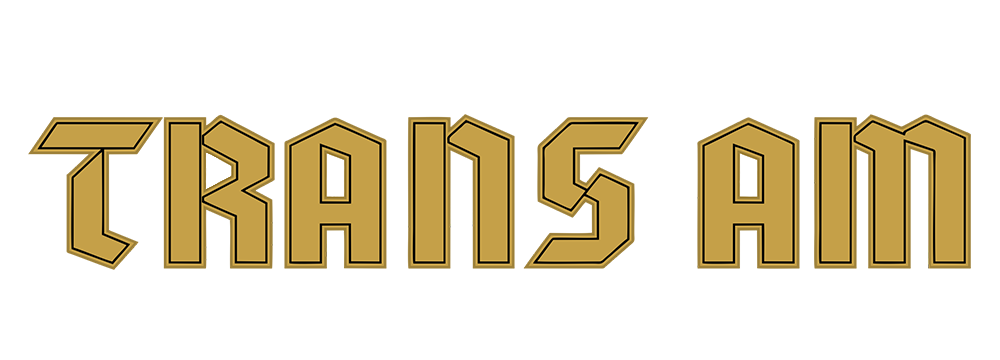
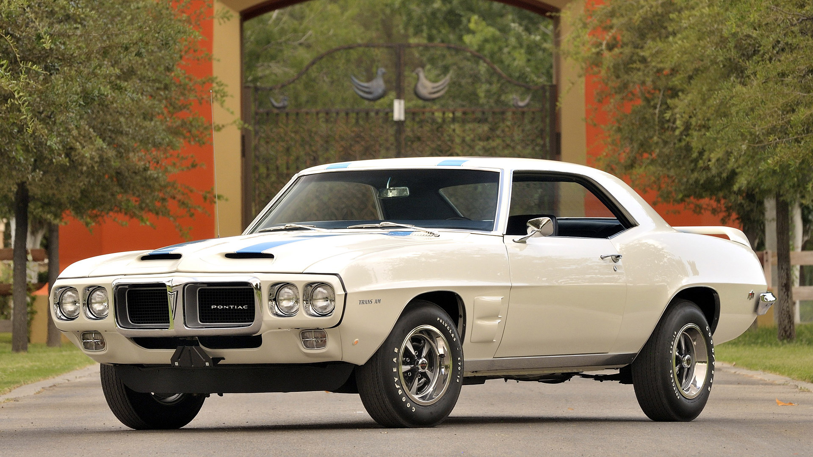
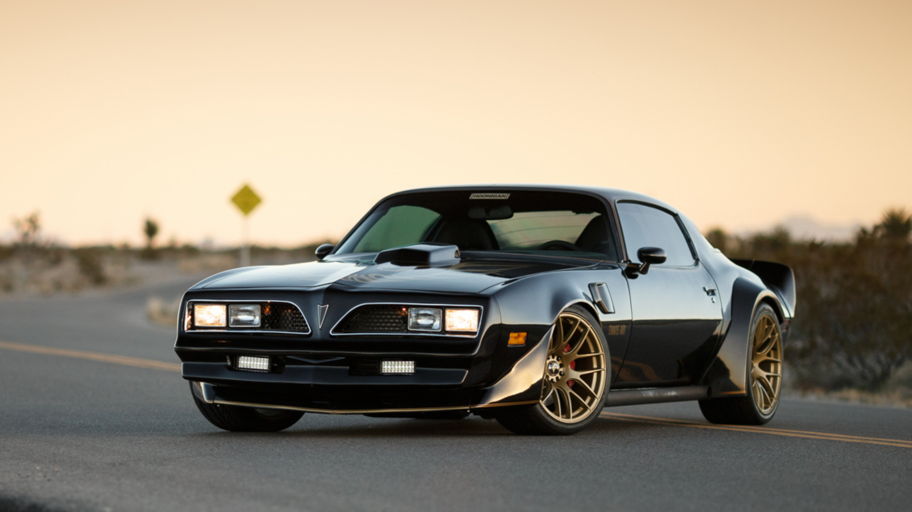
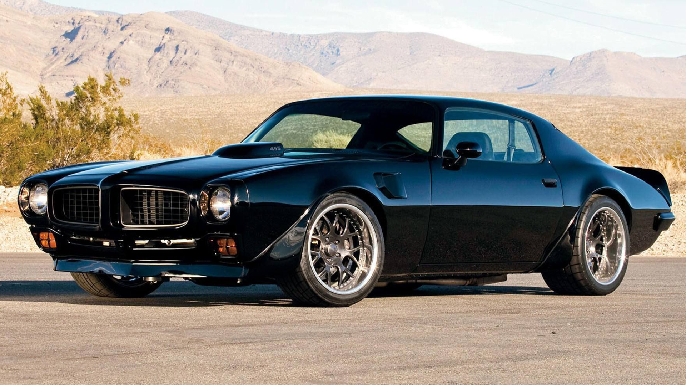

Trans am
Bakgrunn
Det heile byrja med at Pontiac ville ha sin eigen "pony car", altså ein som likna ein Mustang. Derfor byrja dei å produsere Firebird i 1967. Pontiac sin Firebird selde bra, og i 1969 var det mogleg å kjøpe den med ein utstyrspakke som vart kalla "Trans Am performance and appearance package". Utstyrspakken var kalle dette etter det kjende billøpet "Trans Am Series". Under 700 av desse vart produsert, noko som gjer dei svært sjeldne og verdifulle. Dessverre støytte General Motors på nokre problem, og måtte derfor slå nokon av selskapa sine konkurs. Eit av dei var Pontiac. Dei stengde dørane sine i 2009.
LOGO

Viktige periodar
1967-1969

I 1967 produserte Pontiac sin første Firebird. No hadde dei ein "pony car" slik som Ford hadde med sin mustang. To år seinare, i 1969, la Pontiac til ein Trans Am utstyrspakke. Det gav bilen meir hestekrefter og betre eigenskapar i svingane.
1970-1981

Andre generasjon av Trans Am er den mest kjende av dei. Det er og den generasjonen som var lengst i produksjon av dei, heile elleve år. Den hadde no eit lengre karoseri og meir hestekrefter. Ein klassikar som aldri vil bli gløymd.
1972

Generasjon 2 av Pontiac sin Firebird kom ut i 1972. Den hadde utruleg mange forskjellege motorar den kunne bli levert med, heile 14 forskjellige, der den største var ein 7,5 liter V8ar.
1977
1977 utgåva av Pontiac sin Firebird med Trans Am utstyrspakken blei bruk i den kjende Filmen Smokey and the Bandit i 1977. Filmen handlar om ein som rømmer frå politiet med ein Trans Am, finnes det ein betre bil å rømme med?